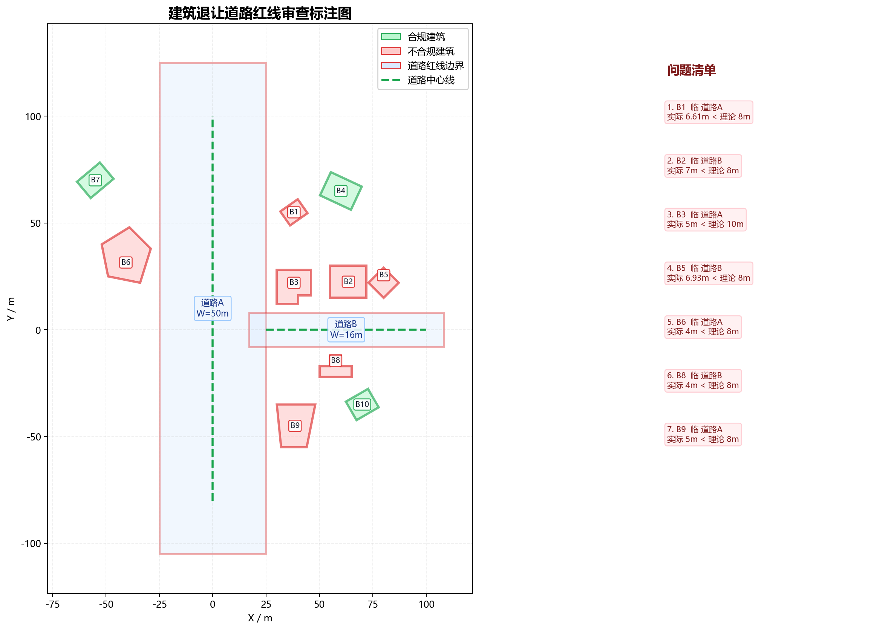

| 建筑名称 | 类型 | 高度(m) | 临接道路 | 实际让距(m) | 理论让距(m) | 判定 | 依据链 |
|---|---|---|---|---|---|---|---|
| B1_旋转低层住宅 | 低层 | 9.00 | 道路A | 6.61 | 8.00 | 不合规 | 表3-2：道路红线宽度>40m，低层建筑，退让=8.0m；第3款：道路交叉口四周建筑控制值8.0m |
| B1_旋转低层住宅 | 低层 | 9.00 | 道路B | 40.86 | 8.00 | 合规 | 表3-2：14m≤道路红线宽度≤20m（14m以下参照本档），低层建筑，退让=3.0m；第3款：道路交叉口四周建筑控制值8.0m |
| B2_矩形多层办公楼 | 多层 | 20.00 | 道路B | 7.00 | 8.00 | 不合规 | 表3-2：14m≤道路红线宽度≤20m（14m以下参照本档），多层建筑，退让=5.0m；第3款：道路交叉口四周建筑控制值8.0m |
| B2_矩形多层办公楼 | 多层 | 20.00 | 道路A | 30.00 | 10.00 | 合规 | 表3-2：道路红线宽度>40m，多层建筑，退让=10.0m；第3款：道路交叉口四周建筑控制值8.0m |
| B3_L形多层商业 | 多层 | 18.00 | 道路B | 4.00 | 8.00 | 不合规 | 表3-2：14m≤道路红线宽度≤20m（14m以下参照本档），多层建筑，退让=5.0m；第3款：道路交叉口四周建筑控制值8.0m |
| B3_L形多层商业 | 多层 | 18.00 | 道路A | 5.00 | 10.00 | 不合规 | 表3-2：道路红线宽度>40m，多层建筑，退让=10.0m；第3款：道路交叉口四周建筑控制值8.0m |
| B4_旋转高层酒店 | 高层 | 85.00 | 道路A | 25.21 | 14.00 | 合规 | 表3-2：道路红线宽度>40m，高层建筑，退让=10Q=10×1.4=14m；第3款：道路交叉口四周建筑控制值8.0m |
| B4_旋转高层酒店 | 高层 | 85.00 | 道路B | 48.18 | 8.00 | 合规 | 表3-2：14m≤道路红线宽度≤20m（14m以下参照本档），高层建筑，退让=5Q=5×1.4=7m；第3款：道路交叉口四周建筑控制值8.0m |
| B5_菱形多层会所 | 多层 | 15.00 | 道路B | 6.93 | 8.00 | 不合规 | 表3-2：14m≤道路红线宽度≤20m（14m以下参照本档），多层建筑，退让=5.0m；第3款：道路交叉口四周建筑控制值8.0m |
| B5_菱形多层会所 | 多层 | 15.00 | 道路A | 47.93 | 10.00 | 合规 | 表3-2：道路红线宽度>40m，多层建筑，退让=10.0m；第3款：道路交叉口四周建筑控制值8.0m |
| B6_不规则低层别墅 | 低层 | 7.00 | 道路A | 4.00 | 8.00 | 不合规 | 表3-2：道路红线宽度>40m，低层建筑，退让=8.0m；第3款：道路交叉口四周建筑控制值8.0m |
| B6_不规则低层别墅 | 低层 | 7.00 | 道路B | 52.85 | 8.00 | 合规 | 表3-2：14m≤道路红线宽度≤20m（14m以下参照本档），低层建筑，退让=3.0m；第3款：道路交叉口四周建筑控制值8.0m |
| B7_旋转高层公寓 | 高层 | 55.00 | 道路A | 21.42 | 12.00 | 合规 | 表3-2：道路红线宽度>40m，高层建筑，退让=10Q=10×1.2=12m；非交叉口情形 |
| B8_T形多层厂房 | 多层 | 16.00 | 道路B | 4.00 | 8.00 | 不合规 | 表3-2：14m≤道路红线宽度≤20m（14m以下参照本档），多层建筑，退让=5.0m；第3款：道路交叉口四周建筑控制值8.0m |
| B8_T形多层厂房 | 多层 | 16.00 | 道路A | 25.00 | 10.00 | 合规 | 表3-2：道路红线宽度>40m，多层建筑，退让=10.0m；第3款：道路交叉口四周建筑控制值8.0m |
| B9_梯形低层仓库 | 低层 | 5.00 | 道路A | 5.00 | 8.00 | 不合规 | 表3-2：道路红线宽度>40m，低层建筑，退让=8.0m；第3款：道路交叉口四周建筑控制值8.0m |
| B9_梯形低层仓库 | 低层 | 5.00 | 道路B | 27.00 | 8.00 | 合规 | 表3-2：14m≤道路红线宽度≤20m（14m以下参照本档），低层建筑，退让=3.0m；第3款：道路交叉口四周建筑控制值8.0m |
| B10_旋转高层综合楼 | 高层 | 70.00 | 道路B | 19.67 | 8.00 | 合规 | 表3-2：14m≤道路红线宽度≤20m（14m以下参照本档），高层建筑，退让=5Q=5×1.2=6m；第3款：道路交叉口四周建筑控制值8.0m |
| B10_旋转高层综合楼 | 高层 | 70.00 | 道路A | 37.30 | 12.00 | 合规 | 表3-2：道路红线宽度>40m，高层建筑，退让=10Q=10×1.2=12m；第3款：道路交叉口四周建筑控制值8.0m |
建筑内部仅保留短标签；绿色为合规建筑，红色为不合规建筑；道路红线为红色边界，中心线为绿色虚线，右侧为问题清单图例。

合规建筑：3 栋；不合规建筑：7 栋。
t_parse=0.0279s t_review=0.0007s t_render=0.4544s t_total=0.4830s